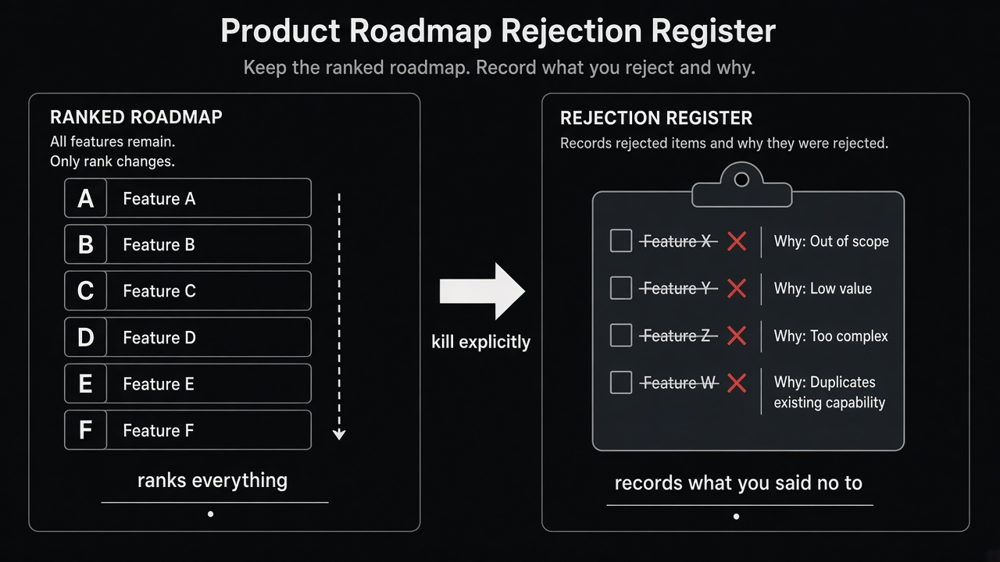

Keep a rejection register next to the roadmap
Source: Scrum.org (@Scrumdotorg) summarizing Ralph Jocham
original post
What it claims
A typical roadmap ranks everything and rejects nothing. Items that lose never die — they just slide down a slot and keep consuming attention. The fix is a rejection register: an explicit log of what you said no to, and why. Ranking alone is not prioritization; killing with a reason is.
Why it matters for a PO
Stakeholders re-pitch the same ideas because “no” left no paper trail. Sprint Planning and refinement fill with zombies that were never formally rejected. A short why (out of scope, low value vs. Product Goal, duplicates existing capability) turns a soft demotion into a durable decision you can defend without re-litigating every PI.
3 takeaways
- If an item only moves down the list, you have not prioritized — you have deferred conflict.
- Write the rejection reason in one sentence the next stakeholder can read without you in the room.
- Review the register when the same idea returns; either reaffirm the no or reopen with new evidence.
Practice this week
Open your current roadmap or Product Backlog. Pick five items that have only slid down for two or more planning cycles. Move each into a “Rejected / parked” list with one why. Share that list in the next stakeholder sync and ask: which of these should we reopen with new evidence — and which stay dead?